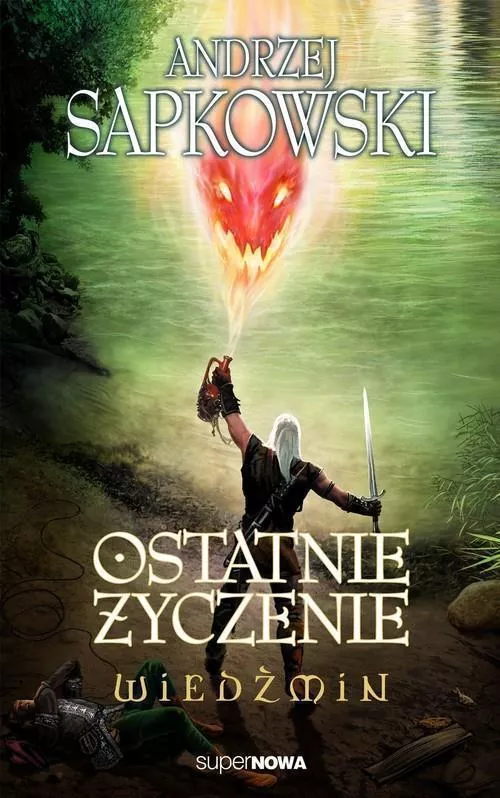
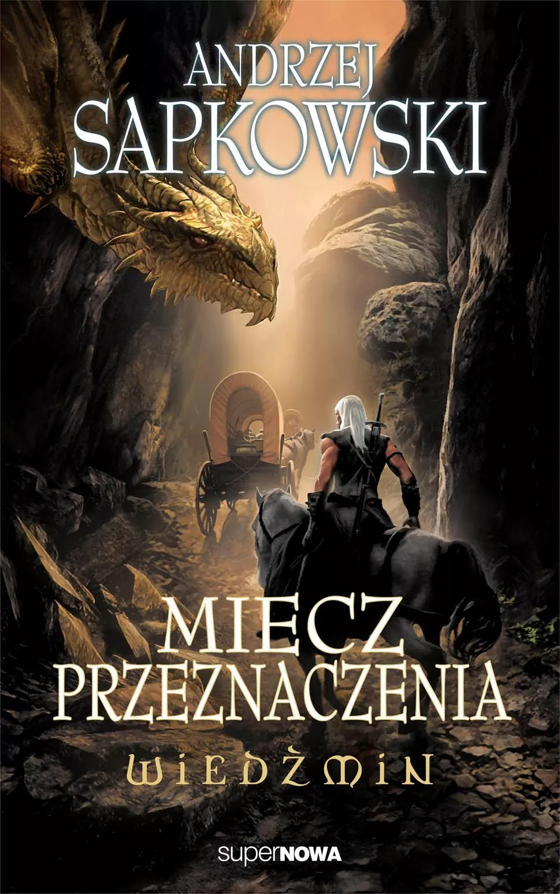
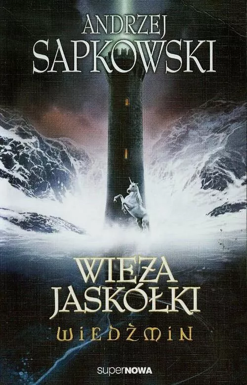
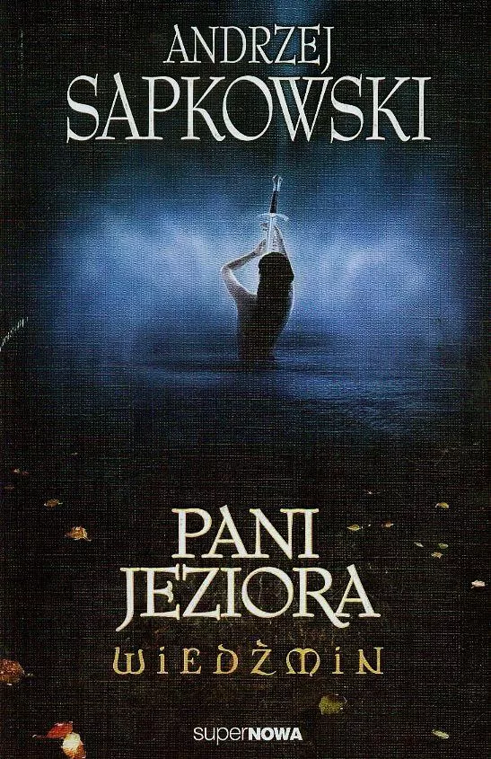

Ostatnie życzenie
Ostatnie życzenie – zbiór opowiadań fantasy z 1993 roku, napisanych przez Andrzeja Sapkowskiego i stanowiących wstęp do cyklu o wiedźminie Geralcie.
Został wydany przez wydawnictwo superNowa w 1993 roku, a wydanie drugie w roku 2003 (ISBN 83-7054-061-9). Skonstruowany na zasadzie powieści szkatułkowej, składa się z opowiadania przewodniego Głos rozsądku, przerywanego przez pozostałe opowiadania, wyjaśniające, uzupełniające i tworzące spójną historię Geralta z Rivii. Opowiadania Kwestia ceny, Ziarno prawdy, Mniejsze zło i Wiedźmin ukazały się wcześniej w czasopiśmie „Fantastyka” oraz w zbiorze opowiadań Wiedźmin.
Miecz przeznaczenie
Miecz przeznaczenia – zbiór opowiadań z gatunku fantasy z 1992 roku, napisanych przez Andrzeja Sapkowskiego.
Wydany w 1992 roku przez Niezależną Oficynę Wydawniczą Nowa (ISBN 83-7054-037-6). Opowiadania z tego tomu stanowią wprowadzenie do sagi o Geralcie z Rivii i razem z Ostatnim życzeniem wyjaśniają najważniejsze wydarzenia w życiu głównych bohaterów cyklu.
Fabuła
Akcja rozpoczyna się w momencie wykonywania przez Geralta jego codziennej pracy, czyli likwidowania potworów za pieniądze. Tym razem mamy do czynienia z bazyliszkiem. Po pozbyciu się stworzenia, wiedźmin poznaje tajemniczego rycerza, Borcha Trzy Kawki, któremu towarzyszą zerrikańskie wojowniczki, Tea i Vea, jego ochrona. Po wspólnie spędzonym wieczorze i nocy panowie postanawiają razem podróżować. Natykają się jednak na barierę – droga została zablokowana z powodu pojawienia się w okolicy smoka. Całe Hołopole rusza na polowanie zarządzone przez króla Niedamira z Caingorn. Na jego wezwanie, czy też zaproszenie na tropienie smoka odpowiadają rycerz Eyck z Denesle, Rębacze z Crinfrid z Boholtem, krasnoludy pod wodzą Yarpena Zigrina, Yennefer z Vengerbergu, czarnoksiężnik Dorregaray. Plącze się tam również Jaskier, bard, przyjaciel wiedźmina. Geralta łączą z Yennefer dość zażyłe stosunki. Poszukiwanym smokiem okazuje się ranna samica, chroniąca swoje dziecko. Naprzeciw myśliwym staje smok Villentretenmerth, z gatunku złotych. Złote smoki mogą zmieniać swoją postać na co tylko zechcą. I tak Villentretenmerth jest rycerzem Borchem Trzy Kawki. Geralt i Yennefer przyłączają się do smoka i rozprawiają z jego oprawcami. Jadą potem razem do Aedd Gynvael, gdzie czarodziejka ma do załatwienia sprawy z miejscowym magiem, Istreddem. W wyniku niezdecydowania czarodziejki, ucieka ona przed swoim przeznaczeniem. Geralt jedzie do Novigradu, gdzie spotyka znów Jaskra. Tam mają przygodę z niziołkiem Daintym Biberveldtem i dopplerem Tellico Lunngrevinkiem Letorte. Następnie lądują nad morzem w Bremervoord, księstwie Aglovala, gdzie Geralt robi za tłumacza w rozmowach księcia z piękną syreną Sh'eenaz. Po nieudanych pertraktacjach (książę jest zakochany w syrenie, ale żeby być razem to jedno z nich musi zrezygnować z dotychczasowego życia – albo Agloval stanie się trytonem albo Sh'eenaz kobietą) wiedźmin nie dostaje zapłaty. Wtedy mają szczęście – Jaskier zostaje poproszony o śpiewanie na weselu, jako drugi bard. Pierwszym jest jego stara znajoma, Essi Daven zwana Oczkiem. „Oczko” od razu zakochuje się w wiedźminie. Potem Geralt dostaje następne zadanie od księcia – ma sprawdzić co nęka poławiaczy pereł, którzy w coraz mniejszym składzie wracają z połowów. Następnie Geralt trafia do Brokilonu, lasu driad, rządzonego przez Panią Eithne. Jedzie tam z poselstwem do Duen Canell, serca Brokilonu. I spotyka swoje przeznaczenie – małą, zagubioną w lesie dziewczynkę, Ciri, cintryjską księżniczkę. Odtąd ich losy, splecione niegdyś w wyniku Prawa Niespodzianki, już na zawsze są ze sobą powiązane.
Sezon burz

Sezon burz – powieść fantasy autorstwa Andrzeja Sapkowskiego, wydana 6 listopada 2013 roku.
Akcja powieści rozgrywa się w świecie wiedźmińskim, w którym osadzona jest również fabuła Sagi o wiedźminie tego samego autora. Głównym miejscem, w którym rozgrywa się akcja jest królestwo Kerack oraz okoliczne ziemie.
Głównym bohaterem powieści jest wiedźmin Geralt z Rivii – najemny łowca potworów, za młodu poddany morderczemu treningowi i mutacjom w wiedźmińskiej warowni Kaer Morhen, który ze względu na swoją odmienność (zmiany wyglądu spowodowane mutacją), jest traktowany przez społeczeństwo w najlepszym wypadku jako zło konieczne.
Książka nie jest bezpośrednią kontynuacją Pani Jeziora – poprzedniej książki Sapkowskiego o Geralcie. Jej akcja osadzona została na krótko przed wydarzeniami z opowiadania Wiedźmin.
Fabuła
Geralt stacza walkę z niebezpiecznym potworem, którego jedynym celem w życiu jest zabijanie ludzi. Krótko po tym zostaje aresztowany, co skutkuje utratą jego dwóch bezcennych mieczy wiedźmińskich. Z małą pomocą swojego przyjaciela, Jaskra i jego koneksji, robi wszystko, by odzyskać swoje narzędzia pracy. W międzyczasie wdaje się w romans z czarodziejką Lyttą Neyd (o pseudonimie Koral), poznaje wpływowe persony oraz margines społeczny związany z państwem, w którym utracił swoje miecze - Kerack.
Te wydarzenia oraz nieukrywana i odwzajemniona niechęć magów do Geralta (którzy okazują się być powiązani z tą historią) sprawiają, że całość układa się w pasmo niepowodzeń, podczas których bohater zmuszony jest do podejmowania trudnych decyzji.
Krew elfów

Krew elfów – powieść fantasy autorstwa Andrzeja Sapkowskiego, pierwszy raz wydana w 1994 roku. Jest pierwszą z pięciu części sagi o wiedźminie tego autora. W 2009 zdobyła David Gemmell Awards for Fantasy.
Akcja powieści rozgrywa się – wedle określenia samego autora – w quasi-średniowiecznej allotopii i jest kontynuacją wcześniejszych opowiadań.
Głównymi bohaterami powieści są Geralt z Rivii, wiedźmin, zawodowo trudniący się zabijaniem groźnych dla ludzi potworów, który specjalnie w tym celu był ćwiczony i poddawany ryzykownym zabiegom, oraz królewna Ciri, nastoletnia dziewczyna, która w wyniku wojny utraciła rodzinę i tron.
Geopolitycznie świat jest podzielony dwubiegunowo na cesarstwo Nilfgaardu, rządzone absolutystycznie przez imperatora Emhyra var Emreisa oraz Nordlingów – państwa północne, m.in. Rivię, Temerię, Redanię, Cintrę i Aedirn, w których panuje jeden język, nazywany wspólnym.
Fabuła
Po występie artystycznym poeta Jaskier udaje się do zamtuza. Tam nieoczekiwanie składa mu wizytę nieznajomy – czarodziej Rience. Prosi on o informacje na temat losów bohaterów utworów poety, w szczególności Ciri i Geralta. Jaskier odmawia i próbuje uciekać, lecz zostaje magicznie sparaliżowany. Rience poddaje go torturom w pobliskiej stajni przy pomocy dwóch zbirów. Zaalarmowana wrzaskami, śledząca poetę, czarodziejka Yennefer wkracza do akcji i uwalnia go.
Ciri pobiera nauki i uczy się walki mieczem w Kaer Morhen, dawnym wiedźmińskim siedliszczu. Wkrótce zaczyna przejawiać niezwykłe zdolności magiczne. Obecni w fortecy wiedźmini, nie wiedząc jak pielęgnować i rozwijać jej potencjał, wzywają na pomoc znajomą czarodziejkę Triss Merigold. Geralt w towarzystwie Ciri i słabującej na zdrowiu Triss Merigold opuszcza Kaer Morhen i dołącza do konwoju przewożącego tajny ładunek dla kaedweńskiego króla, Henselta, i spotyka tam znajomego, wynajętego jako eskortę krasnoluda, Yarpena Zigrina. Podróżując zostają napadnięci przez komando elfich i krasnoludzkich partyzantów, zwących się Scoia'tael, Wiewiórkami, a walczących o utworzenie własnego, niepodległego państwa. W walce wychodzi na jaw, że przewożony towar to kamienie, zaś cały konwój jest realizacją tajnej operacji mającej na celu ujawnienie zdrajcy przekazującego wrogowi tajne informacje na temat transportu królewskiego złota.
Geralt, nie mogąc znaleźć Rience’a, zatrudnia się do wiedźmińskiej ochrony barki rzecznej w Oxenfurcie w nadziei, że jego słynne nazwisko zwabi czarownika i umożliwi dowiedzenie się, dlaczego tamten poszukuje Ciri. W czasie jednego z rejsów do barkasu przybija łódź i jej załoga, podająca się za temerską straż, wchodzi na pokład z zamiarem aresztowania Geralta. Ten plan zostaje udaremniony przez nieoczekiwany atak rzecznego potwora.
Przebywający w Oxenfurcie Jaskier, sam będący redańskim agentem, jest śledzony przez sługi Dijkstry, szefa redańskich służb wywiadowczych. Zaprowadzony przed jego oblicze zostaje napomniany za brak raportów na temat planów wiedźmina. Jaskier nieskutecznie próbuje dezinformować Dijsktrę wmawiając mu, że Geralta nie ma w mieście i dowiaduje się, że wiedźminem i Ciri interesuje się większość wywiadów państw Nordlingów. Rozmowa, przy której obecna jest bliska redańskim kręgom władzy czarodziejka Filippa Eilhart, kończy się usilną prośbą o skontaktowanie Dijsktry z Geraltem. Jaskier, nie zdając sobie sprawy, że jest śledzony przez czarodziejkę, nocą udaje się do Geralta, by ostrzec go przed grożącym mu niebezpieczeństwem.
Król Redanii, Vizimir, król Temerii, Foltest, król Kaedwen, Henselt, król Aedirn, oraz królowa Lyrii, Meve potajemnie naradzają się w sprawie rosnącego zagrożenia inwazją Nilfgaardu na ziemie Nordlingów oraz zataczającej coraz szersze kręgi elfiej partyzantki. Rozważają opcję złamania pokoju, wyparcia cesarstwa z Cintry oraz postanawiają stłamsić rebelię Wiewiórek. Fakt tajnej narady królów państw północnych zostaje natychmiast wykryty przez nilfgaardzki wywiad. Cesarz rozkazuje skrytobójcze zamordowanie wiedźmina. Informacja o spotkaniu trafia również do Kapituły, stowarzyszenia najpotężniejszych czarodziejów.
Geralt, Jaskier i Filippa Eilhart przy pomocy znajomej studentki medycyny, Shani, od lokalnego znachora zdobywają informacje na temat Rience’a. Wkrótce dochodzi do konfrontacji pomiędzy Rience’em a Geraltem.
Ciri, ukryta przed światem, kontynuuje edukację u Nenneke, głównej kapłanki świątyni bogini Melitele. Po niedługim czasie jednak opuszcza klasztor z czarodziejką, dawną kochanką Geralta, Yennefer, która ją szkoli w magicznej sztuce.
Czas pogardy

Czas pogardy – powieść z gatunku fantasy, napisana przez Andrzeja Sapkowskiego, wydana w 1995. Jest drugą z pięciu części sagi o wiedźminie tego autora.
Fabuła
Geralt w mieście Dorian spotyka się ze Codringherem, prywatnym detektywem i specjalistą od wszelkiej czarnej roboty, którego najął celem zdobycia informacji o czarowniku imieniem Rience.
Czarodziejka Yennefer wraz z Ciri jadą do Gors Velen i dalej na Wyspę Thanedd. W Hirundum spotykają się z Geraltem. Yennefer zamierza oddać Ciri do Szkoły Czarodziejek – Aretuzy.
W tym czasie na Thanedd odbywa się wielki zjazd magów. Po uroczystym bankiecie Filippa Eilhart oraz szef redańskiego wywiadu, Sigismund Dijkstra, z pomocą oddziałów redańskich przeprowadzają pucz mający niejako na celu oczyszczenie środowiska czarodziejów ze szpiegów Nilfgaardu. Główni posądzeni o zdradę – przewodniczący Czarodziejskiej Kapituły Vilgefortz z Roggeveen, Artaud Terranova oraz Francesca Findabair – zostają aresztowani i zakuci w kajdany z dwimerytu. Geralt przez przypadek wpada w sam środek organizowanego przewrotu. Dijkstra zabiera wiedźmina do Loxii, natomiast Filippa Eilhart aresztowanych na szczyt wyspy Thanedd – do pałacu Garstangu. Tam, na polecenie arcymistrzyni Tissai de Vries, przybywa Yennefer wraz z Ciri, która zaczyna wieszczyć. Przepowiada wybuch wojny oraz śmierć Vizimira z Redanii. Tissaia de Vries, chcąc przeciwdziałać dokonywanemu właśnie przewrotowi, zdejmuje osłonę antymagiczną i uwalnia aresztowanych. Nagle do walki dołączają elfie komanda Scoia'tael, wysłany przez Nilfgaard czarny rycerz ze skrzydłami drapieżnego ptaka na hełmie oraz czarodziej Rience – który okazuje się być podwładnym Vilgefortza. Tymczasem Geralt ucieka Redańczykom raniąc dotkliwie Dijkstrę i rusza do Garstangu, gdzie trafia w sam środek walk pomiędzy elfami i czarodziejami. Ratuje Ciri zabijając Artauda Terranovę i wyrzynając wielu Scoia'tael. Ciri natomiast pokonuje czarnego, nilfgaardzkiego rycerza, który okazuje się być młodzieńcem Cahirem aep Ceallachem, oraz ucieka do Wieży Mewy – Tor Lara. Za dziewczynką rusza Vilgefortz, któremu drogę zagradza Geralt. Dochodzi do walki, w wyniku której wiedźmin zostaje zmasakrowany. Czarodziej wchodzi do wieży, Ciri jednak wstępuje w portal, a cała Tor Lara eksploduje.
Po zajściach na Thanedd Geralt trafia do Brokilonu, gdzie uzdrawiają go driady. Po pewnym czasie dołącza do niego Jaskier.
Ciri zostaje przeteleportowana na pustynię Korath, zwaną Patelnią, gdzie po wyczerpującej wędrówce spotyka na swej drodze młodego jednorożca, z którym wspólnie udaje jej się znaleźć wyjście z pustyni. Wkrótce znajdują ją wysłannicy imperatora Emhyra var Emreisa. Ciri jednak zostaje uwolniona przez bandę Szczurów, do których się przyłącza.
Do Nilfgaardu trafia fałszywa Cirilla podstawiona sługom Ervylla w Verden przez półelfa Schirrú, działającego na zlecenie Vilgefortza.
Cesarstwo Nilfgaardu wypowiada wojnę Północnym Królestwom. Dokonuje inwazji przez Dol Angra i w ciągu kilku dni rozbija armie królowej Meve w Lyrii i króla Demawenda w Aedirn. Głównodowodzący armią Nilfgaardu, marszałek Menno Coehoorn, pokonuje Nordlingów w bitwie pod Aldersbergiem, zdobywa Vengerberg oraz Rivię. Cesarz Emhyr zawiera rozejm z Foltestem z Temerii, (zajęcie przez Foltesta Hagge), dogaduje się z Henseltem z Kaedwen (rozbiór nilfgaardzko-kaedweński Aedirn] – zajęcie tzw. Północnej Marchii, ziem Aedirn po rzekę Dyfne) i Franceską Findabair – Enid an Gleanna (utworzenie Doliny Kwiatów – Dol Blathanna, marionetkowego państwa elfów), oraz z Ervyllem z Verden, który w efekcie składa cesarzowi hołd lenny, dzięki czemu Nilfgaard dzierży ujście Jarugi.
Chrzest ognia

Chrzest ognia – powieść z gatunku fantasy, napisana przez Andrzeja Sapkowskiego, wydana w 1996. Jest trzecią z pięciu części tzw. sagi o wiedźminie.
Fabuła
Wiedźmin Geralt po wyleczeniu się w lesie Brokilon i zasięgnięciu informacji od łuczniczki Milvy wyrusza wraz z Jaskrem, by uratować Ciri. Ruszają wzdłuż rzeki Wstążki na zachód w kierunku Verden. Wpadają na havekarów – kupców handlujących ze Scoia'tael, do których przybywa kilku nilfgaardzkich rycerzy. Dochodzi do walki, w której Geraltowi i Jaskrowi z pomocą nagle nadciąga Milva. Po walce okazuje się, że havekarzy wieźli zamkniętego w trumnie Cahira aep Ceallacha, którego dostarczył im Isengrim Faolitiarna – dowódca elfiego komanda z Thanedd. Młodzieńca mieli przejąć Nilfgaardczycy, gdyż ten nie wykonał rozkazu – nie schwytał Ciri na wyspie.
Tymczasem Emhyr var Emreis zrywa rozejm z Temerią i atakuje Brugge z trzech stron – od północy, z Brokilonu, uderzają skoncentrowane elfie komanda, od zachodu oddziały verdeńskie, a od południa wojska nilfgaardzkie. Geralt, Jaskier i Milva zostają osaczeni przez wojska i zmuszeni są do podróży na wschód, kryjąc się po lasach. Dołączają do kompanii krasnoludów eskortującej grupkę uchodźców, której przewodzi Zoltan Chivay. Kompania wspólnie przemierza ogarnięte wojną i pożarem Brugge. Za rzeką Chotlą, na elfim cmentarzysku Fen Carn spotykają ekscentrycznego cyrulika o imieniu Emiel Regis, który postanawia wyruszyć dalej z nimi. Wkrótce docierają do obozu uchodźców. Tam pewien pustelnik podburza chłopów przeciwko upośledzonej dziewczynie, oskarżając ją o czary. W jej obronie staje wiedźmin i jego kompania, których pustelnik wyzywa na próbę ognia, mówiąc że tylko osoba o nieskazitelnym sercu może wyjąć gołą dłonią rozżarzoną do czerwoności podkowę. Ku zdziwieniu wszystkich Regis wyjmuje z ogniska gorącą podkowę. Wówczas obóz zostaje zaatakowany przez nilfgaardzki zagon i cała kompania ulega rozproszeniu. Okazuje się, że w Sodden z Nilfgaardem walczy wydzielony z armii temerskiej cintryjski korpus pod dowództwem marszałka Vissegerda. W ich ręce wpadają Geralt oraz Jaskier i zostają zatrzymani w obozie wojskowym pod fortem Armeria.
W nocy wiedźmina i barda uwalnia Regis, po czym znika. Gdy jednak uciekinierzy próbują się wymknąć, obóz atakują nilfgaardczycy. Dochodzi do bitwy, w której Jaskier zostaje ranny w głowę. Ostatecznie obydwu udaje się uciec. Tymczasem Cahir ratuje Milvę walczącą o konie z chłopskimi uciekinierami. Cała piątka spotyka się znów nad Iną, gdzie Regis opatruje ranę Jaskra oraz zdradza, iż jest wampirem. Wiedźmin nakazuje Regisowi odejść. Wkrótce potem wampir mimo to powraca. Tam też, podczas wspólnego jedzenia zupy rybnej, formuje się wiedźmińska kompania.
Tymczasem Filippa Eilhart powołuje tajną Lożę Czarodziejek dla ochrony spraw magii, która ma odmienić losy świata. Na pierwsze posiedzenie w zamku Montecalvo Francesca Findabair przybywa wraz z Yennefer, którą na Thanedd zamieniła w nefrytową statuetkę, rzekomo w celu ochrony przed Riencem. Gdy wychodzi na jaw, że loża chce wykorzystać Ciri do własnych, wielkich planów – Yennefer z pomocą Fringilli Vigo ucieka z Montecalvo.
Wiedźmińska kompania udaje się na wschód w stronę Caed Dhu – do druidów, by dowiedzieć się gdzie jest Ciri, gdyż Cahir zaręcza, iż nie ma jej w Nilfgaardzie. Spotykają na swej drodze Zoltana Chivaya, który daje Geraltowi swój miecz – sihil. Podróżując przez ogarnięty wojną lesisty Angren, kompania postanawia przekroczyć Jarugę. Tam wpadają w sam środek walk między wojskami nilfgaardzkimi a liryjskimi partyzantami królowej Meve i biorą udział w bitwie o most na Jarudze. Geralt z Rivii i Cahir stają po stronie Lyrii. Meve, w zamian za to, pasuje wiedźmina na rycerza o tytule "Geralt z Rivii".
Wieza Jaskółki
Wieża Jaskółki – powieść z gatunku fantasy, napisana przez Andrzeja Sapkowskiego, wydana w 1997. Jest czwartą z pięciu części sagi o wiedźminie tego autora.
Fabuła
Ranna i ledwo żywa Ciri zostaje odnaleziona na bagnach Pereplutu przez pustelnika Vysogotę z Corvo, który zaczyna się nią opiekować. Między młodą dziewczyną i starym wykładowcą oxenfurckiej uczelni stopniowo nawiązuje się przyjaźń. Cirilla postanawia opowiedzieć mu swoją historię. Tymczasem kompania wiedźmina Geralta ucieka z armii królowej Meve, przekracza Jarugę i wraz z gromadą bartników udaje się na południe w stronę Gór Amell, by odnaleźć poszukiwanych druidów. Opowiadana przez Ciri historia rozpoczyna się w miejscowości Zazdrość. Tam, wynajęty przez nilfgaardzkiego koronera do zadań specjalnych – Stefana Skellena zwanego „Puszczykiem”, łowca nagród Leo Bonhart wycina w pień hanzę Szczurów. Jednakże Ciri pozostawia przy życiu, choć bezwzględnie miał ją zabić. Bonhart oszukuje swoich mocodawców i wystawia Ciri na arenie w Claremont, gdzie dziewczyna ma walczyć ku uciesze tłumu. Tymczasem w Riedbrune do kompanii Geralta przyłącza się jasnowłosa Angoulême, która zbiegła z hanzy Słowika. Ostrzega ona wiedźmina przed zasadzką w Belhaven, którą przygotowała hanza Słowika na rozkaz tajemniczego półelfa.
Armia Nilfgaardu, po zdobyciu Sodden, przekracza granicę Temerii i pokonuje wojska Foltesta w bitwie pod Mariborem. Osacza twierdzę, ale odstępuje od oblężenia ze względu na zbliżającą się zimę. Emhyr var Emreis planuje wielką ofensywę na Temerię wiosną. W obliczu tych wydarzeń, Dijkstra udaje się na rokowania z królem Esteradem Thyssenem z Koviru. Obaj zdają sobie sprawę z zagrożenia jednakże Kovir musi pozostać neutralny. Esterad Thyssen udziela Dijkstrze nieoficjalnej pożyczki, dzięki której Redania będzie w stanie wystawić silną armię. Geralt podejrzewa Cahira o zdradę i dochodzi między nimi do bójki w Ekwinokcjum. Obaj godzą się, a wiedźmińska kompania się rozdziela – Geralt, Cahir i Angoulême jadą do Belhaven; natomiast Jaskier, Milva i Regis na wschód do Toussaint – do druidów z Caed Myrkvid.
Do wynajętej przez Stefana Skellena hanzy dołączą totumfacki Vilgefortza – Rience. Spotykają się z Bonhartem we wsi Goworożec. Tam w noc Ekwinokcjum, w wyniku przypadkowej pomocy podwładnej Skellena – Joanny „Kenny” Selborne, Ciri udaje się uciec prześladowcom. Zostaje jednak ciężko raniona w twarz przez Puszczyka.
W końcu, gdy Ciri zdrowieje, opuszcza Vysogotę z Corvo i udaje się do owianej tajemnicą Wieży Jaskółki – Tor Zireael, gdzie znajduje się magiczny portal, którym ma ona zamiar dostać się na wyspę Thanedd. Jej śladami podąża 14-osobowy pościg na czele z Puszczykiem, Bonhartem i Riencem. Tymczasem Yennefer, uciekając z Montecalvo, ląduje niedaleko wysp Skellige. Tam wymusza na jarlu Crachu an Craite spełnienie przysięgi pomocy Cirilli z Cintry, twierdząc, że jest jej opiekunką i chce ją odnaleźć. Próbując dostać się do siedziby Vilgefortza organizuje wyprawę na Głębię Sedny, gdzie jej statek wchłania magiczny cyklon, a ona sama – ledwo żywa – dostaje się do niewoli czarodzieja. Za zasadzką w Belhaven stoi półelf Schirrú – wysłannik Vilgefortza, który z pomocą ludzi Słowika i przekupionych nilfgaardzkich żołnierzy pojmuje wiedźmina. Belhaven zostaje jednak zaatakowane przez partyzantów z organizacji Wolne Stoki.
W wirze walki Geraltowi, Cahirowi i Angoulême udaje się uciec w góry. Tam, na polecenie napotkanego Regisa, Geralt samotnie i bez broni wchodzi do górskiej groty. Spotyka tam tajemniczego elfa Avallac'ha – Wiedzącego, który odradza mu kontynuowania wyprawy, gdyż Ciri tak czy inaczej przeznaczone jest trafić do niego. Geralt pędzi do Toussaint, gdzie jego kompania walczy z pogonią półelfa Schirrú i Słowika. Ścigają Shirrú aż do Caed Myrkvid, gdzie schwytani przez Dębostwora, odnajdują w końcu poszukiwanych druidów, lecz gdy elfy zabijają Shirrú medalion Geralta zostaje zniszczony. Ciri, uciekając przez zamarznięte jezioro Tarn Mira, masakruje swoich prześladowców zabijając m.in. Rience'a. Przed rozwścieczonym Bonhartem Ciri umyka prosto do Tor Zireael – Wieży Jaskółki. W ostatniej scenie zamiast na Thanedd ląduje w tajemniczym wymiarze, gdzie spotyka elfa Avallac'ha, mówiącego, iż jej oczekiwał.
Pani Jeziora
Pani Jeziora – powieść z gatunku fantasy, napisana przez Andrzeja Sapkowskiego, wydana w 1999. Jest ostatnią z pięciu części sagi o wiedźminie.
Fabuła
Ciri dostaje się do władanego przez Auberona królestwa Aen Elle – Ludu Olch, po którym jej przewodnikiem staje się elf Avallac'h. Wiedźmińska drużyna opuszcza Caed Myrkvid, gdyż bytujący tam druidzi odmawiają jakiejkolwiek pomocy. Kompania dociera do idyllicznego księstwa Toussaint, w którym Jaskier wdaje się w powtórny romans z księżną Anną Henriettą, Regis z sukkubem, a Geralt z nadworną czarodziejką Fringillą Vigo, będącą równocześnie – o czym wiedźmin nie ma pojęcia – członkinią Loży Czarodziejek. Gdy Ciri dowiaduje się od Avallac'ha, czego żąda od niej Król Olch postanawia zrobić wszystko, by uciec z krainy Aen Elle. Niespodziewanie pomagają jej w tym – również zamieszkujące tę krainę – jednorożce. Wraz z Ihuarraquaxem – jednorożcem, z którego spotkała na pustyni Korath – Ciri przenosi się między kolejnymi światami ścigana przez Eredina – jednego z przywódców Aen Elle.
Tymczasem wzmocnione licznymi ochotnikami oraz najemnikami z Koviru zjednoczone armie Temerii i Redanii rozpoczynają kontrofensywę przeciw wojskom Emhyra var Emreisa na centralnym odcinku frontu. Odrzucają oddziały wroga na południe i uderzają na Dolne Sodden wygrywając m.in. bitwę pod Mayeną.
Drużyna Geralta tkwi bezczynnie w Toussaint przez parę miesięcy gnuśniejąc i tracąc czas. Wiedźmina, w zamku Beauclair, zatrzymuje głównie czarodziejka Fringilla Vigo oraz możliwość ciągłych polowań na potwory w podziemiach zamków Toussaint. Wszystko zmienia się w momencie, gdy będąc na polowaniu pod kasztelem Zurbarran, wiedźmin przypadkowo podsłuchuje tajną rozmowę Stefana Skellena z wielkimi książętami nilfgaardzkimi i dowiaduje się, gdzie ukrywa się czarodziej Vilgefortz. Geralt domyśla się, że Fringilla Vigo specjalnie „trzymała go” w Toussaint na czyjeś zlecenie. Oszukuje czarodziejkę i za miejsce pobytu Vilgefortza podaje zamek Rhys-Rhun w północnym Nazair. W wyniku tej dezinformacji przewodnicząca Loży Filippa Eilhart rozkazuje podjąć szturm na opustoszały zamek Rhys-Rhun co kończy się wielką kompromitacją Loży Czarodziejek. Natomiast wiedźmin i jego kompania (poza Jaskrem, który zostaje z księżną Anną Henriettą) błyskawicznie opuszczają Toussaint i udają się na południe, w kierunku prawdziwej siedziby Vilgefortza, czyli zamku Stygga, w której wszystko ma się rozstrzygnąć.
Ciri dzięki pomocy Nimue, udaje się znaleźć odpowiednie miejsce i odpowiedni czas. Dociera do zamku Vilgefortza, gdzie więziona jest również Yennefer.
Marszałek polny cesarstwa Nilfgaardu, Menno Coehoorn postanawia rozstrzygnąć losy wojny i zadać Nordlingom ostateczny, decydujący cios. Na czele potężnej Grupy Armii „Środek” rusza wprost na walczące w Sodden wojska temersko-redańskie. Dochodzi do wielkiej bitwy pod Brenną, w której niemalże cała potęga Północy ściera się z całą potęgą Południa. W bitwie ginie Coën – wiedźmin, przyjaciel Geralta.
Po tych wydarzeniach Geralt i jego drużyna przybywają do zamku i w wyniku walk czarodziej Vilgefortz zostaje zabity przez Geralta, a Leo Bonhart – przebity Jaskółką, mieczem Ciri. W szturmie na zamek giną jednak Cahir aep Ceallach, Milva, Angoulême oraz Emiel Regis. W cytadeli dochodzi do spotkania Emhyra var Emreisa z głównymi bohaterami.
Wiedźmin i Ciri spotykają w Toussaint Jaskra, który ma zostać stracony za układanie paszkwili i notoryczne zdradzanie księżnej, jednak w ostatniej chwili zostaje ułaskawiony. Ciri i Yennefer trafiają na zamek Montecalvo, siedzibę Loży Czarodziejek, gdzie Loża ma zadecydować o przyszłości Lwiątka z Cintry. W tym samym czasie natomiast Jaskier i Geralt spotykają w rivskiej karczmie znajomych krasnoludów. Wówczas wybucha w Rivii pogrom nieludzi. Geralt zostaje ciężko ranny. Ratując go, Yennefer opada zupełnie z sił. Ciri wykorzystując swoje umiejętności przenosi ich do innego wymiaru i sama również odchodzi.